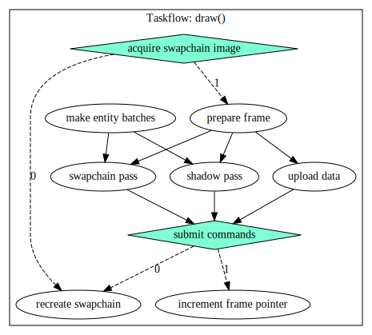

Vulkan and graphics API,s in general have been on my mind for a long time, but i have never found the time due to their complexity, until finally this year i decided to really give it a go. The results were well worth it.
I quickly got to experience that Vulkan has a very steep learning curve, especially when you do not have any prior experience in graphics programming.
To my knowledge there does not exist any guides/tutorials on vulkan that also covers the basics of graphics programming, so for the theory behind it all i had to look at the OpenGL tutorial
and for the Vulkan-specific code i used the vulkan tutorial and a vulkan guide.
There is a lot of initialization code in vulkan, and most of it is just repeated from what others have already done. It will suffice to say that this project uses Vulkan 1.3 and the dynamic-rendering extension.
To make my life a bit easier, all the memory allocations are done by Vulkan Memory Allocator.
Once i had the initialization code mostly done it was fairly simple to get some geometry to render to the screen. I used assimp to load the default cube model created in blender into the application.
To get some more life into the scene i also implemented some Bézier curves and drew them as lines. Below is a picture of a scene early in the developement process.
Now, to get different geometry to render to the same scene i needed some kind of way to keep track of each "object",s or "entity",s properties such as their model and texture. I wanted to stuff all my entities into a single array so each entity had to have the same size. The entity class ended up looking (simplified) like this:
struct entity_t
{
name_t name;
transform_t& transform();
model_t* model;
texture_t* texture;
material_t* material;
};
The reason for entity_t having a function to get the transform (location, rotation, scale) is that by doing it this way we can stuff every transform into a separate array, making it much faster to iterate over every transform in the application. Getting the transform for a given entity is done by indexing the transform array by the index of said entity in the entity array, thus we have to make sure to synchronize these two arrays with eachother.
But actually, thats not the whole truth. The entities are not stored in a "normal" array like std::vector, but rather in a container type called a slotmap. This is because i quickly encountered a problem where i would store a reference to an entity in one frame, and in the next frame it could have been deleted! The slotmap solves this by associating an ID with the reference so that if the ID has changed, we know the item is no longer valid. I highly recommend you learn about this container if you havent already as its a very interesting and powerful tool.
The next task was implementing shadows, i did this with the shadowmapping technique that is very popular for real-time applications. Basically you render the scene from the lights point-of-view and store the depth of the fragments and later look it up to determine if the current fragment is in shadow from that light. Heres how it ended up looking with three different colored light sources.
With that, the core of the renderer is done. It can now render multiple different geometry with different textures and shaders applied.
To make it easier to modify the scene and remove and add lights and entities i decided to integrate the ImGUI library into the application.
This did require some modification of the library,s backend as it used renderpasses and not dynamic-rendering by default, but it was nothing too complicated.
I also wanted to experiment with multithreading. The renderer is actually limited by the GPU and not the CPU at this time so this does not have any practical use but is purely a learning experience. You can totally skip this step if you are not interested.
First thing to do is splitting the responsibilities of the program into two threads; the main and render thread using the pthread library.
As these two threads work in parallel to eachother we need to duplicate the data that the render-thread works with in order to avoid a data race.
The way these threads are implemented is shown in pseudo-code below:
void main_thread_routine()
{
while(true)
{
copy_render_data();
work();
wait_for_draw();
}
}
void render_thread_routine()
{
while(true)
{
wait_for_render_data();
draw();
}
}
Splitting an application into two main threads like this is a popular approach that is done by eg Unreal Engine. In addition, the draw() function is itself multithreaded but this time with taskflow. The work() function is not as it is really small, but when your application increases in complexity it can of course be multithreaded as well. Taskflow has a really nice way to visualize the workflow, ill let it speak for itself.
Everything for the renderer is now done! Heres how the final scene with the user-interface looks like.
Learning Vulkan has been a very hard and at times a frustrating experience. Many times my math did not work and i had to spend multiple days searching for the correct formulas,
but after all the effort it all came together and i am very happy with the progress that i have done.
The next step is to implement deferred-rendering, a technique to render many more light sources at once (currently the application is limited to ~10 lights on my hardware) this will be covered in the next post.
Thanks to my friend scaredykattie for making some of the models showcased here and providing feedback!
The source for this project can be found here.